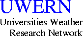

The Universities Weather Research Network (UWERN) is a group of UK University departments working in close collaboration with each other and with providers and users of regional and local weather services.
UWERN research takes place under the NERC Thematic Programme mode, Core Strategic mode and the Responsive mode. The mission of UWERN is to harness expertise from within UK Universities, and exploit facilities within Universities, Research Institutes and the Meteorological Office to advance the knowledge, understanding and prediction of atmospheric behaviour on regional and smaller scales.
As part of its core activity the BADC is responsible for the data management of projects that are undertaken under the auspices of UWERN. These include research undertaken using the Universities Facility for Atmospheric Measurement (UFAM) instruments.
Please see the UWERN website for more information.